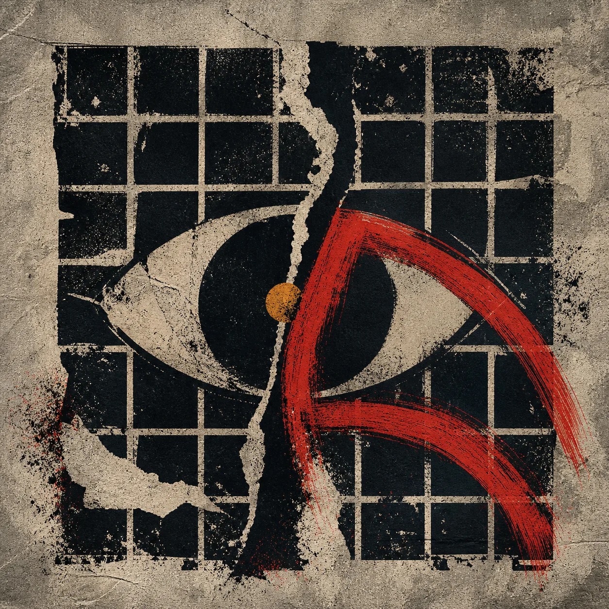
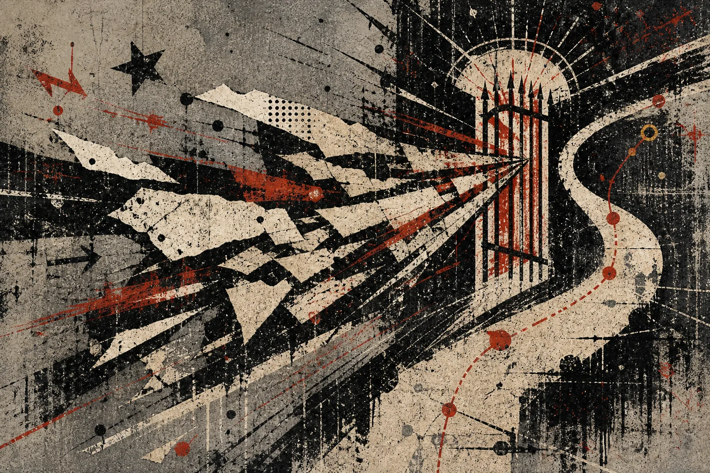
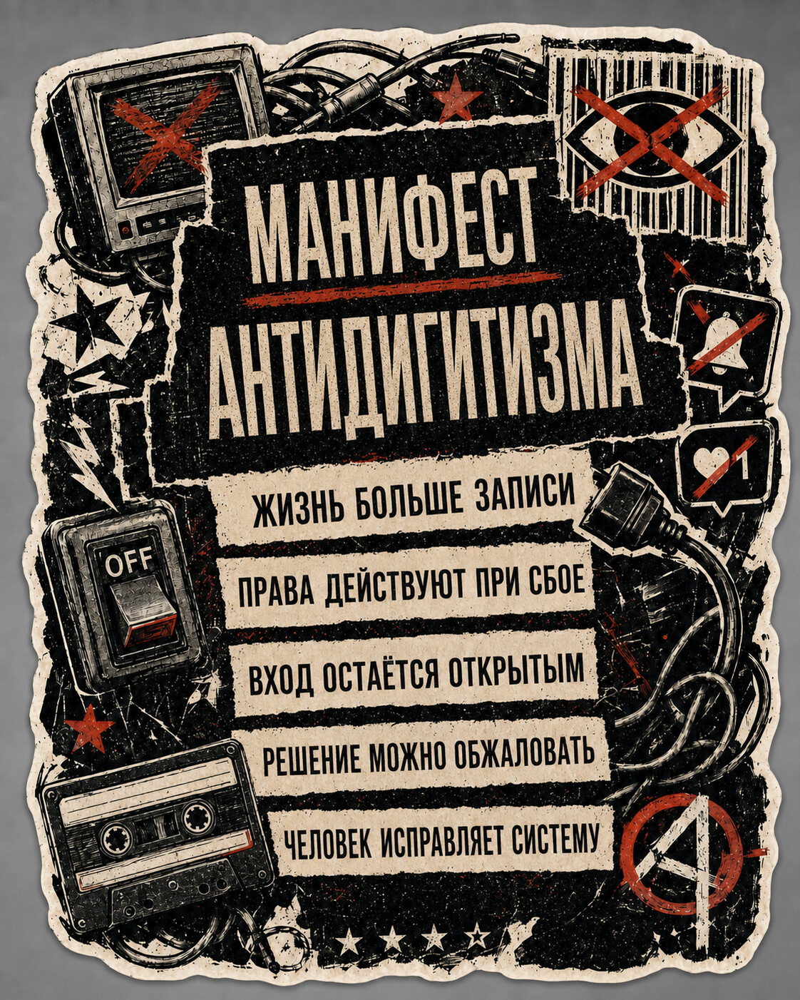

optional route / 2·4
Антидигитизм
Они должны нам жизнь. Наша жизнь не должна им данные.
Распечатанное изображение, вышедшее из генеративной системы через экран, драйвер и принтер, лежит на физическом столе, где его можно согнуть, приклеить к стене или передать человеку, который никогда не открывал эту систему. Цифровой результат покинул устройство, хотя условия его появления продолжают действовать в комнате, а совет «просто не пользуйся» уже опоздал, поскольку контакт произошёл через чужое решение. В «Кризисе хобби» эта цена уже видна в клубе, где запись начинает решать принадлежность; здесь масштаб поднимается к организованной двери учреждения, работы и услуги.
Новости, рабочие требования и правила общения приходят тем же путём: можно удалить приложение, пока коллеги пересказывают сообщения из него и строят процессы вокруг оставшихся внутри; можно отказаться от генеративного инструмента, пока его результаты всё равно появляются в документах, коде и предметах; можно оставить хобби без публикаций, пока платформа становится местом, где сообщество узнаёт участников, хранит память и решает вопрос допуска. Личный отказ уменьшает прямое использование, но не устраняет его последствий из общей среды, и после рассмотренной в «Инференции и Пробабилистикуме» непрерывной генерации и обратной связи остаётся вопрос о политической цене выхода.
В этом эссе дигитизмом названа норма, при которой машиночитаемое представление становится условием признания внутри организованной среды вроде учреждения, рабочего коллектива, клуба или неформального сообщества. Она редко объявляется программой и обычно проявляется в устройстве входа, которое требует личного аккаунта и личного устройства: создай профиль, подтверди личность, установи приложение, оставь след активности, загрузи свидетельство, согласись на обработку, пользуйся каналом, где уже находятся остальные. По отдельности эти шаги выглядят небольшими, а вместе определяют, получат ли событие, личность, право или отношение признание в этой среде и в каком машиночитаемом виде действующая там инфраструктура сможет их принять. Общий экран, семейный аккаунт или посредник без полной передачи учётных данных такому входу обычно не соответствуют. Материальная история самотрансляции, платформенного доступа и утраты контроля над инфраструктурой уже прослежена в Post-Simulacrum Self-Service Without Contact; здесь она становится условием политической проверки.
всё должно пройти через данные
Дигитизм описывает правило допуска, действующее у дверей учреждений, рабочих коллективов, клубов и сообществ. Антидигитизм оспаривает это правило там, где запись становится исключительным судьёй реальности, и сохраняет равноценные маршруты, по которым человек может участвовать, исполнять обязанности, получать помощь и обжаловать решения без исключительной зависимости от машиночитаемой записи. Возможность отказаться от цифрового посредника и сохранить доступ к работе, дружбе, культуре, услуге и сообществу сохраняет за технологией роль инструмента. Иван Иллич называл радикальной монополией положение, при котором один промышленный тип удовлетворения потребности вытесняет остальные, и требовал от инструментов отсутствия обязанности ими пользоваться (Иллич, 1973).
Бумага остаётся основой учёта даже тогда, когда вокруг неё появляются новые инструменты; цифровое оборудование и программное обеспечение заняли сходное инфраструктурное место в общей жизни. Полный выход из этого места уже повышает цену работы, заботы, перемещения, обучения и дружбы, а равноценные альтернативы с тем же удобством остаются редкими, потому что капитал, проектный труд и внимание учреждений сосредоточены внутри одного технологического подхода. Смартфоны, часы и медицинские приборы расширяют измерение и могут спасти жизнь. Политическое давление собирается там, где единственная цифровая схема становится единственной рабочей дверью, где обычное использование приходит вместе с непрерывным наблюдением, журналированием и поведенческим анализом, и где интерфейсы собирают зависимость, эмоции и иррациональные сигналы, пока маршруты равной скорости, стоимости и достоинства почти не получают развития. Антидигитизм требует этих маршрутов — включая цифровые режимы, которые выполняют задачу, не превращая человека в постоянно доступную поверхность.
Монополизация конкретной инфраструктуры также раскладывает стоимость её содержания на людей, которые не просили этот пакет. Телефонный тариф, в котором интернет приходит как обычная коммерческая форма, обязывает человека, которому нужны только звонки, участвовать в финансировании сети передачи данных; продукты только для голоса становятся редкими, а общий счёт остаётся. Критическая телекоммуникация относится к инфраструктуре общей жизни. Европейские правила универсальной услуги уже рассматривают доступный адекватный широкополосный доступ и голосовую связь как страховочную сеть участия (Директива (ЕС) 2018/1972), а государства долго организовывали такие сети как общественные предприятия. Доступ можно финансировать как гражданскую возможность с разделимыми функциями, тогда как частное умолчание, связывающее несколько слоёв в один оплачиваемый объект, переносит цену одной монопольной схемы на людей, искавших более узкое применение.
Обходной путь
Кнопка входа сохраняет видимость формального выбора, хотя отказ начинает стоить времени, денег, профессиональной видимости или чужого терпения. Государственная услуга остаётся доступной по телефону, но звонок занимает часы; рабочая встреча допускает отсутствие аккаунта, но решения принимаются в закрытом канале; сообщество не требует публикаций, но новых участников узнают по видеоматериалам, и цена каждого обходного пути показывает распределение власти.
Обзор 138 эмпирических исследований цифрового отключения обнаружил, что социально-экономические и интерсекциональные различия пока изучены слабее других тем (Альтмайер и др., 2024). Конкретную цену показывает этнография цифрового государства благосостояния в Дании: обязательные системы самообслуживания передавали труд доступа самим людям, семьям и организациям третьего сектора, а для маргинализированных групп получение помощи становилось труднее (Каррерас, 2024). Личная дисциплина потребления помогает настроить собственные привычки, а антидигитизм переносит внимание на полноценные общественные маршруты для людей, выбирающих иной способ участия.
Частичный отказ позволяет пользоваться электронной почтой и обходиться без социальной сети, публиковать статический сайт и не поддерживать ежедневный профиль, применять модель в одной задаче и исключать её из другой, формируя границу, которая требует права выбирать посредника отдельно для каждой области и сохраняет свободу от единой личной цифровой идентичности со всем пакетом её условий.
Разница между использованием и воздействием становится заметной далеко за пределами экрана, когда человек не применяет генеративную модель, а затем читает созданный ею текст в рабочем документе, слышит синтезированный голос в службе поддержки или получает решение, подготовленное системой, которой он не видел. Учитель может отказаться от автоматической проверки и всё равно разбирать работы, написанные с её помощью; художник может не публиковаться на платформе, пока организатор оценивает его через найденный там профиль; житель может не устанавливать приложение, хотя ближайший пункт обслуживания закрыли после перехода большинства пользователей в цифровой канал.
Так возникает недобровольная включённость, при которой чужое использование технологии меняет общую среду и помещает отказавшегося человека внутрь её последствий. Возможность не нажимать кнопку сохраняется, а возможность жить в прежних условиях исчезает, поскольку организация перераспределила сотрудников, сообщество перенесло память, редакция изменила темп, а рынок принял новое ожидание производительности. Та же грамматика включения работает, когда система по предсказанной восприимчивости собирает обращение вокруг человека: рекламная сеть как коммерция и мошенничество как незваная услуга ранжируют страх, стыд, жадность или скрытое предпочтение и предъявляют стимул. Исследования отказа от ИИ описывают его как культурную политику именно потому, что индивидуальное неиспользование сталкивается с коллективно произведённой средой.
Обратной стороной становится исключение через отказ, при котором человек сохраняет границу и теряет часть участия, которое раньше не требовало её нарушения. Такая потеря часто выглядит добровольной, поскольку последним действием действительно был отказ пользователя, однако устройство выбора создали раньше через закрытие кассы, перенос разговора, обязательную идентификацию или профессиональную норму постоянной доступности. Политический вопрос касается распределения издержек между организацией, выбравшей единственный канал, и человеком, которому предлагают лично оплатить обход.
Когда оцифровка начала становиться обязательной, я узнал в собственной депрессии чувство соучастия и бессилия. Больше двадцати лет я программировал, обслуживал системы и участвовал в создании среды, которую теперь почти не мог изменить в одиночку. Обычные рабочие решения превращают других людей в недобровольных участников цифровой среды, когда вычислительный вывод принимают как призыв к действию и перестраивают вокруг него расписание, доступ и оценку.
Там, где у гипотезы есть метрика, у ошибки — цена, а у неудачного решения — откат, работа с данными остаётся инструментом организации. Психологическая безопасность ломается иначе: после работы люди читают чужие следы в ленте, долгие паузы и профили как готовый вердикт о приглашении, доверии и принадлежности, не имея ни общего разбора оснований, ни пути исправить неверное толкование. Ранжирование и видимость даёт платформа; решения о человеке принимают люди. Дигитизм закрепляется, когда эти решения признают только зарегистрированное состояние.
Компьютер работает с доступными ему материалами: файлами, сообщениями, идентификаторами, связями, временными отметками, измерениями и моделями. Эти записи образуют зарегистрированный и поэтому частичный слой события, неживое поле сигналов и записей, через которое люди исследуют, встречаются и обмениваются на расстоянии, поддерживают дружбу, обучают движению и сохраняют голос. Жизнь и эмоции остаются у людей, которые входят в это поле и выходят из него.
За двадцать лет программирования я видел, как живой материал вжимают в условные формы, чтобы системы могли его хранить и обмениваться им. Поле формы, допустимый вид значения, согласованный формат сообщения и экран, принимающий лишь определённые ответы, покупают эту совместимость ценой различий, которые они не могут удержать. Идея вычислительного «понимания человека» продолжает тот же договор, поскольку постоянно меняющаяся жизнь попадает в обработку через зафиксированный снимок и заранее доступные категории. Этика и культура становятся условиями применения результата, а эмпатия начинается с признания неполноты представления и готовности продолжить отношения за пределами формата.
Проблема обостряется, когда зарегистрированный слой получает юрисдикцию над источником: профиль определяет, можно ли войти; история активности доказывает, работал ли человек; видеозапись решает, принадлежит ли он практике; метрика сообщает, заслуживает ли действие продолжения. Антидигитизм берёт разобранное в «Исполняемых следах» различие между событием и цифровым следом и добавляет институциональную проверку юрисдикции, спрашивая, кто получает право судить источник по следу и что происходит с человеком, который не оставляет машиночитаемых следов. Когда генеративные условия делают одиночное представление более дешёвым и менее убедительным доказательством присутствия, как уже разобрано в Post-Simulacrum Self-Service Without Contact и в «Инференции и Пробабилистикуме», организованные среды повышают требование непрерывного машиночитаемого присутствия, чтобы признание по-прежнему можно было администрировать.
Обязательная видимость работает без прямого приказа, поскольку система поддерживает узнаваемость через новые зарегистрированные состояния и тем самым постепенно повышает цену молчания. Право на приватность позволяет решать, какие сведения раскрывать; кроме этого, человек может вообще не переводить часть своей жизни в данные и оставаться для системы нечитаемым. Эдуард Глиссан требовал права на непрозрачность как основания отношения, в котором человек остаётся непрозрачным для чужого перевода (Глиссан, 1997).
Маршрут через день
Обходной путь приводит к обычной служебной двери, где телефон без ответа, бумажная форма с месячной задержкой и физическое окно в другом городе сохраняют маршрут только в документации. Стоящий перед дверью человек узнаёт, сопоставимы ли качество, срок и стоимость доступа и требует ли вход личного совместимого устройства и личного аккаунта у частного поставщика идентификации; государство, работодатель, банк, школа и медицинская система через эти практические детали определяют, кто может участвовать в общей жизни.
Тот же человек может использовать аккаунт для налоговой декларации и оставить транспорт, библиотеки и публичное обсуждение за пределами этой идентичности. Согласие на цифровой канал остаётся привязанным к одной задаче, позволяя постепенно менять решения и сохранять работу, связи и доступ к учреждениям через другие маршруты.
У обходного пути уже есть датированные случаи. Дания в 2014 году сделала Digital Post обязательной для большинства жителей и создала процедуру освобождения от неё (Агентство цифрового правительства Дании). Программа Digital First в Финляндии и связанные с ней бюджетные решения на 2026 год делают электронные услуги предполагаемой основой для людей, уже пользующихся цифровыми каналами, продвигают цифровую официальную переписку как основной маршрут для этих пользователей и оставляют бумагу непрерывным путём для жителей вне электронных услуг, а уже находящиеся внутри этих каналов могут возвращаться к бумаге на год (Министерство финансов Финляндии; Агентство цифровой и демографической информации). Статья 5a(15) европейского регламента о цифровой идентичности требует добровольности кошелька, запрещает ухудшать положение не использующих его людей и сохраняет прежние способы идентификации (Европейский союз, 2024). Эти решения по-разному проводят спорную границу в праве и администрации, где цифровой маршрут способен расширяться, пока сила отказа зависит от пути, который остаётся рядом.
После встречи человек может уйти без новой записи, пройти период молчания без подозрительного статуса и пользоваться необходимой функцией без построения поведенческого профиля. Минимизация данных, ограниченные сроки хранения, отсутствие требования непрерывной идентификации и защита от решений, основанных только на пропавшем следе, дают этому незарегистрированному промежутку практическое пространство.
Когда машинное состояние закрывает следующую дверь, человеческое рассмотрение даёт путь для обжалования неверной связи, отсутствующей записи, автоматической классификации или несовместимого формата перед тем, кто вправе учесть обстоятельства и исправить результат. Пересмотр требует полномочий и времени; кнопка обращения с автоматическим ответом лишь перекрашивает закрытый вход.
Перед уходом человеку нужны контакты, тексты, изображения, переписка и записи собственной работы в понятном формате, а меняющему сервис сообществу нужна общая память. Переносимость и локальные копии позволяют нескольким формам участия поддерживать друг друга и не дают провайдеру исключительного права определять присутствие.
Поддержание этих маршрутов требует денег и людей, включая цифровые режимы, которые выполняют ту же задачу без непрерывного поведенческого журналирования. Общественное учреждение, экономящее на единственном канале, переносит время ожидания, стоимость личного устройства, обучение, зависимость от помощника и риск потери доступа в жизнь пользователя, где каждый расход продолжает существовать после исчезновения из бюджета организации.
Обход одного человека редко меняет среду, а работники, требующие канал без наблюдения, жители, добивающиеся очного обслуживания, авторы, договаривающиеся о публикации без постоянного личного продвижения, и сообщество, принимающее людей без профиля, способны вместе изменить устройство доступа. Цепочка частных отсутствий становится общим разговором о входе.
При сбое сети, потере телефона, ошибке идентификации, насилии со стороны контролирующего партнёра или когнитивной перегрузке резервный маршрут становится условием безопасности для людей с любым отношением к технологии. Осмысленный отказ показывает зависимость, пока ещё остаётся время поддержать другой путь.
Иногда маршрут завершают другие руки, и учреждение может принять законно выраженную волю, не заставляя доверенного представителя делиться всеми паролями или создавать фиктивный аккаунт от имени отсутствующего пользователя, сохраняя ответственность, пока забота проходит через дверь.
Писатель у новой двери

Писатель особенно ясно показывает эту цену, поскольку произведение можно закончить, дать ему адрес и оставить доступным без ежедневного присутствия автора, а платформенная профессия просит рядом другую работу: растить аудиторию, выбирать фрагменты, регулярно напоминать о себе, поддерживать обсуждение и превращать биографию в продолжающийся канал.
Между рукописью и читателем всегда существовали посредники, включая редактора, издателя, книжный магазин, библиотеку, прессу и живые встречи, а цифровая среда изменила распределение их работы. Часть отбора, рекламы и удержания внимания перешла к автору вместе с доступом к самостоятельной публикации; писатель получил возможность обойти прежние ворота и одновременно оказался перед новой дверью, которая открывается через размер собственной аудитории и регулярность публичного присутствия.
Издатель может искренне искать сильную книгу и всё же спросить о количестве подписчиков, потому что книжный магазин оценивает будущие продажи, рекламный бюджет ограничен, а уже собранная аудитория уменьшает риск. Каждое звено следует понятной экономике, но их соединение превращает предшествующую известность в условие распространения произведения и заставляет автора производить рынок для текста до того, как текст получил возможность встретить читателя.
Особенно трудным становится распространение критики платформенной зависимости, когда участие в её каналах считается доказательством профессиональной реалистичности. Автору предлагают годами поддерживать инфраструктуру внимания ради права рассказать о её цене, а отсутствие профиля принимают за отсутствие потенциальных читателей, хотя библиотека, рассылка, статический сайт, независимый магазин и рекомендация между людьми продолжают образовывать более медленный контур обращения.
PEN America ещё в 2018 году описывала социальные сети как профессиональную необходимость для многих писателей и журналистов. В опросе Authors Guild 84 процента респондентов занимались продвижением; полностью занятые традиционно издаваемые авторы тратили на него в среднем семь часов в неделю, а самостоятельно издаваемые — 12,4 часа (Authors Guild, 2020). В 2026 году организация провела встречу о продвижении книг без социальных сетей. Предложение стать цифровым материалом ради распространения критики экономики внимания показывает, как профессиональный доступ уже встроен в платформу.
Статический сайт даёт небольшую альтернативу внутри той же инфраструктуры: документ продолжает существовать, пока автор молчит, RSS сообщает о новом тексте и затем замолкает, а читатель приходит через год и встречает произведение отдельно от ежедневного представления личности. Серверы, браузеры и поисковые системы продолжают работать в рамках другого временного договора между произведением и человеком.
Спор вокруг машины
Антидигитизм занимает внутри старого спора о машинах ограниченную позицию: он сосредоточен на обязательной датафикации и машинной читаемости как источнике юрисдикции. Датаизм принимает датафикацию как онтологию и эпистемологию, а Хосе ван Дейк прослеживает эту веру через доверие к корпорациям и общественным институтам, обрабатывающим данные (ван Дейк, 2014); дигитизм появляется у двери, где обработанная запись решает, что считается действительным. Интенсивное использование технологий проходит антидигитистскую проверку, пока люди сохраняют содержательный отказ, а конфликт начинается, когда машиночитаемое состояние становится условием работы, услуги, дружбы или политического голоса. Доступ и прозрачность способны усовершенствовать посредничество, оставляя исключительную цифровую дверь на месте; отказ и переустройство спрашивают, должен ли вход существовать в таком виде (Джеймс и др., 2023).
Если перевернуть лежащий на столе лист, символ перечёркнутого глаза, кабели, кассета и выключатель собирают соседние политические истории на одной поверхности. Исторический луддизм сопротивлялся тому, как владелец использовал машину для снижения оплаты, обесценивания мастерства и перераспределения власти (Рэндалл, 1995); неолуддизм и манифест Челлис Глендиннинг 1990 года расширили предмет до технологий как политических устройств (Глендиннинг, 1990). Марксизм удерживает технику внутри спора о власти, где общественная собственность может сменить хозяина платформы, оставив у двери ту же машиночитаемую юрисдикцию (Маркс, 1857–58; Маркс, 1867). Анархистские линии тянутся от эмансипаторной инфраструктуры до недоверия к крупным техническим системам; Ури Гордон описывал активистов, которые сопротивляются технологической власти, программируя и поддерживая автономные сети (Гордон, 2009), а анархистский HCI оценивает инструменты по тому, могут ли участники понимать правила, менять инфраструктуру и продолжать действие после ухода сервиса (Киз и др., 2019). Когда такой инструмент становится единственным каналом признания, он усиливает исключительную юрисдикцию записи.
В 2014 году Дин Старкман назвал «дигитизмом» журналистскую идеологию, которая отбрасывала традиционные формы репортажа, когда цифровые бизнес-модели не могли их поддерживать (Старкман, 2014). Здесь значение термина расширено до машиночитаемого признания в работе, услугах, отношениях и политическом голосе.
Дигитизм способен обслуживать разные режимы, потому что задаёт инфраструктурную норму представимости: рекламное профилирование и управление трудом при либеральном капитализме, право на услугу при административном государстве, наблюдение и наказание при авторитарной власти. Генеративная реклама и мошенничество как услуга требуют непрерывного машиночитаемого присутствия, чтобы ранжировать и стимулировать восприимчивость; антидигитизм оспаривает презумпцию, что человек обязан оставаться цифрово доступной поверхностью для этих систем. Доклад ООН показывает ту же читаемость внутри цифрового государства благосостояния через проверку личности, оценку права на помощь, расчёт выплат, обнаружение мошенничества, классификацию риска и официальную переписку (ООН, 2019).
Делёз описал доступ, управляемый кодами, в 1992 году, а Лессиг в 1999 году показал, как программная архитектура регулирует поведение (Делёз, 1992; Лессиг, 1999). Услуги digital by default и посредничество надзорного капитализма затем свели идентичность, оплату, право на помощь, занятость и обжалование в связанные записи (Cabinet Office, 2010; Зубофф, 2015). Культурно-географические тексты об отказе от ИИ оформляют нынешнее усиление как культурную политику (Линч и Декейсер, 2026), а активисты доступности и цифровых прав давно оспаривают обязательное самообслуживание. Антидигитизм проводит границу там, где машиночитаемое состояние начинает определять право человека на участие.
Выключатель перед устройством
Практический тест выясняет, кто контролирует посредника, могут ли участники обсуждать и менять его условия, существует ли совместимый маршрут без него и сохраняется ли способность действовать вместе после выхода, поскольку формальная кнопка удаления аккаунта мало значит, если за ней закрываются отношения и услуги.
В «Людях с приколом» разобрана ситуация, где форма начинает превосходить человека, которого должна была поддерживать; здесь тот же конфликт возникает на уровне обязательной инфраструктуры.
Я дорожу тем, кем стал, и тем, что уже есть в моей жизни; при этом я стараюсь сопротивляться превращению цифровой среды в обязательный порядок, при котором отказ от генеративной системы становится несовместимым с профессией, услуга недоступна без личного смартфона и личной цифровой идентичности, молчание в ленте истолковывается как утрата принадлежности, а практика без цифрового свидетельства считается неполноценной. Опору для такого сопротивления дают несколько способов входа, живые каналы, переносимые данные, локальные копии, цифровые режимы без непрерывного поведенческого журналирования, общие пространства и люди, имеющие право решить вопрос без машинного состояния.
Распечатанное изображение остаётся на столе, где его происхождение можно обсудить, а сам лист убрать или оставить. Важнейший выключатель по-прежнему расположен раньше устройства, в общей способности решить, где цифровой посредник может претендовать на непрерывную юрисдикцию над человеком и какие равноценные маршруты сохраняют функцию с сопоставимым удобством после отказа в этой претензии.
Следующая статья, «Непрерывность», разбирает три времени, которые цифровая система склонна смешивать: зарегистрированную активность, жизнь практики в человеке и память отношений.
Источники
- Cabinet Office. “Digital by default proposed for government services.” 23 November 2010. https://www.gov.uk/government/news/digital-by-default-proposed-for-government-services
- Danish Agency for Digital Government. “Background” (National Digital Post). https://en.digst.dk/systems/digital-post/about-the-national-digital-post/background/
- Gilles Deleuze. “Postscript on the Societies of Control.” October 59, 1992. https://www.identities.teaching-documents.org/wp-content/uploads/2022/01/deleuze-control.pdf
- Chellis Glendinning. “Notes toward a Neo-Luddite Manifesto.” 1990. https://theanarchistlibrary.org/library/chellis-glendinning-notes-toward-a-neo-luddite-manifesto
- Lawrence Lessig. Code and Other Laws of Cyberspace. Basic Books, 1999. https://lessig.org/product/code/
- Adrian Randall. “Reinterpreting ‘Luddism’: resistance to new technology in the British Industrial Revolution.” In Resistance to New Technology, Cambridge University Press, 1995. https://www.cambridge.org/core/books/abs/resistance-to-new-technology/reinterpreting-luddism-resistance-to-new-technology-in-the-british-industrial-revolution/B3E8AE7F9B38458CB3AA67814361F2FA
- Dean Starkman. “Digitism, Corporatism, and the Future of Journalism: As the Hamster Wheel Turns.” In The Watchdog That Didn’t Bark: The Financial Crisis and the Disappearance of Investigative Journalism, Columbia University Press, 2014, 284–312. https://doi.org/10.7312/star15818-011
- United Nations General Assembly. Extreme poverty and human rights. A/74/493, 2019. https://digitallibrary.un.org/record/3834146?ln=en
- José van Dijck. “Datafication, dataism and dataveillance: Big Data between scientific paradigm and ideology.” Surveillance & Society 12(2), 2014, 197–208. https://doi.org/10.24908/ss.v12i2.4776
- European Union. Regulation (EU) 2024/1183 establishing the European Digital Identity Framework. 2024. https://eur-lex.europa.eu/eli/reg/2024/1183/oj?locale=en
- European Union. Directive (EU) 2018/1972 establishing the European Electronic Communications Code (consolidated). https://eur-lex.europa.eu/legal-content/EN/TXT/?uri=CELEX%3A02018L1972-20241018
- Finnish Ministry of Finance. 2026 Budget Proposal: General Government ICT Development. 2026. https://budjetti.vm.fi/sisalto.jsp?lang=fi&maindoc=%2F2026%2Ftae%2FhallituksenEsitys%2FhallituksenEsitys.xml&opennode=0%3A1%3A3%3A73%3A&year=2026
- Digital and Population Data Services Agency. “Digital First project.” https://dvv.fi/en/digital-first-project
- Shoshana Zuboff. “Big Other: Surveillance Capitalism and the Prospects of an Information Civilization.” Journal of Information Technology 30, 2015. https://doi.org/10.1057/jit.2015.5
- Nina Altmaier, Victoria A. E. Kratel, Nils S. Borchers, Guido Zurstiege. “Studying digital disconnection: A mapping review of empirical contributions to disconnection studies.” First Monday 29(1), 2024. https://doi.org/10.5210/fm.v29i1.13269
- Barbara N. Carreras. Frictional Infrastructures: An Ethnography of Compulsory Digital Self-Reliance and Collective Access in the Danish Welfare State. IT University of Copenhagen, 2024. https://pure.itu.dk/en/publications/frictional-infrastructures-an-ethnography-of-compulsory-digital-s/
- Uri Gordon. “Anarchism and the Politics of Technology.” WorkingUSA 12(3), 2009. https://doi.org/10.1111/j.1743-4580.2009.00250.x
- Ivan Illich. Tools for Conviviality. 1973. http://www.panarchy.org/illich/conviviality.html
- Alexandra James, Danielle Hynes, Andrew Whelan, Tanja Dreher, Justine Humphry. “From access and transparency to refusal: Three responses to algorithmic governance.” Internet Policy Review 12(2), 2023. https://doi.org/10.14763/2023.2.1691
- Os Keyes, Josephine Hoy, Margaret Drouhard. “Human-Computer Insurrection: Notes on an Anarchist HCI.” CHI 2019. https://doi.org/10.1145/3290605.3300569
- Casey R. Lynch, Thomas Dekeyser. “AI refusal: a cultural politics.” Cultural Geographies, 2026. https://doi.org/10.1177/14744740261443641
- Karl Marx. “Fragment on Machines.” In Grundrisse, 1857–58. https://www.marxists.org/archive/marx/works/1857/grundrisse/ch14.htm
- Karl Marx. Capital, Volume I, Chapter 15. 1867. https://www.marxists.org/archive/marx/works/1867-c1/ch15.htm
- Édouard Glissant. Poetics of Relation. University of Michigan Press, 1997. https://sites.evergreen.edu/politicalshakespeares/wp-content/uploads/sites/226/2015/12/Glissant-For-Opacity.pdf
- PEN America. “Writers and Online Harassment: Evidence of a Chilling Effect.” 2018. https://pen.org/writers-and-online-harassment-evidence-of-a-chilling-effect/
- The Authors Guild. The Profession of Author in the 21st Century. 2020. https://authorsguild.org/app/uploads/2022/09/AGWhitePaperFinal-2-18-20-with-logo-and-toc-final.pdf
- The Authors Guild. “Promoting Books Without Social Media.” 16 March 2026. https://authorsguild.org/event/promoting-books-without-social-media/
